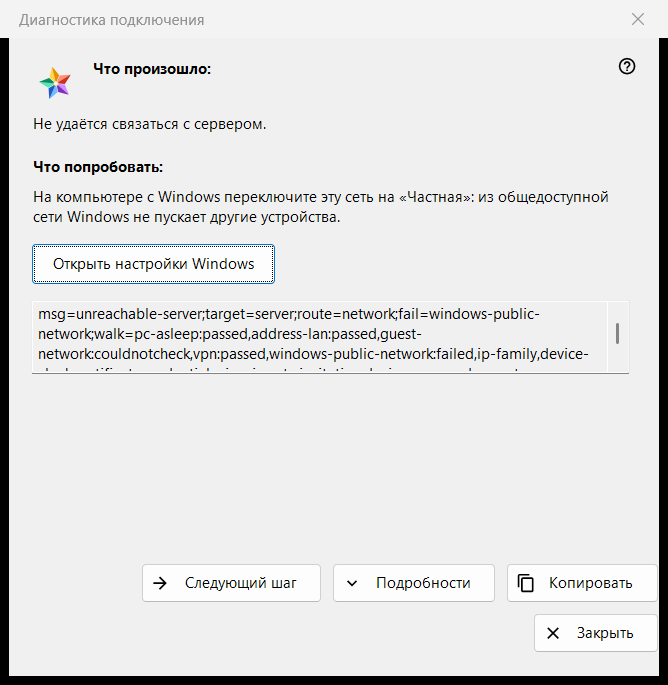
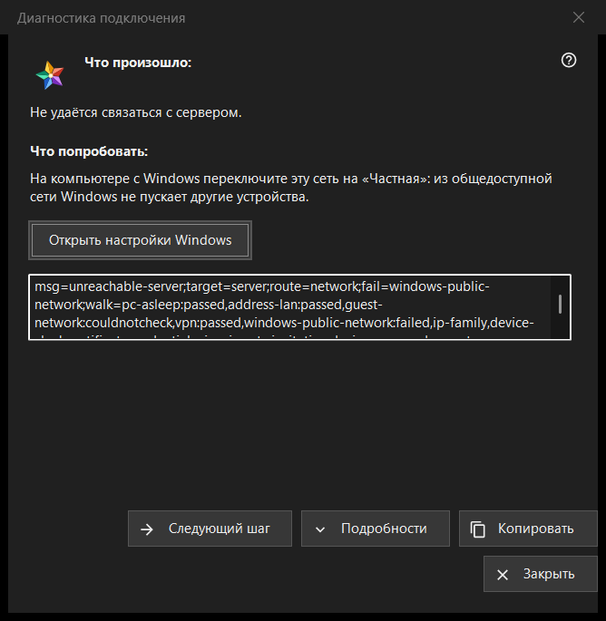

Диагностика подключения
Назначение
Объясняет, почему не удаётся связаться с сервером или устройством, и по одному шагу предлагает, что попробовать. Она не меняет ни одной настройки компьютера или Windows. Окно открывается пунктом «Почему не подключается?..» в меню «Ещё» списка ресурсов (для выбранной строки), кнопкой записи сервера в «Мои устройства», когда запись требует входа заново, показывает смену сертификата или не может подключиться, а также само - когда ресурс не открылся.


Порядок действий
- Прочитайте «Что произошло:».
- Попробуйте то, что написано в «Что попробовать:».
- Если причина не в этом, нажмите «Следующий шаг».
- Нажмите «Подробности», если нужны коды, и «Копировать», чтобы передать их.
- Закройте окно.
Элементы окна
Что произошло
Одна фраза о сбое, например «Не удаётся связаться с сервером.», «Логин или пароль неверны.» или «Этот сервер не похож на тот, к которому вы подключались раньше.». Она зависит от вида сбоя, из-за которого открылось окно.
Что попробовать
Окно начинается с первого шага, на котором проверка нашла неполадку, а если такого нет - с первого шага списка. Типичные шаги: разбудить устройство, на котором работает сервер; убедиться, что оба устройства в одной сети; выйти из гостевой сети Wi-Fi; ненадолго выключить VPN; переключить сеть Windows на «Частная»; проверить сервер из другой сети; установить правильные дату и время; подтвердить новый отпечаток; заново ввести логин и пароль. Последний шаг говорит, что исправить это может только тот, кто управляет сервером.
Следующий шаг и настройки Windows
«Следующий шаг» переходит по шагам и исчезает на последнем. Для двух шагов, которые решаются в настройках Windows (профиль сети и часы), кнопка «Открыть настройки Windows» открывает нужную страницу Windows; сама программа ничего не меняет.
Подробности и «Копировать»
«Подробности» показывают или скрывают нередактируемое поле с кодами диагностики: вид сбоя, цель, маршрут, шаг с неполадкой и пройденные шаги. В нём никогда нет адреса, логина, пароля или отпечатка. «Копировать» кладёт эту строку в буфер, и окно сообщает «Коды диагностики скопированы в буфер обмена.»
Как работает проверка
Проверка выполняется только для подключения, которое вы пытались установить, и только читает: она пробует достучаться до хоста и порта и смотрит состояние сети, адаптеры VPN, профиль сети Windows, вид адреса, часы и сертификат. Она останавливается на первом шаге с неполадкой, а проверка, которую не удалось выполнить, никогда не считается ни пройденной, ни проваленной.